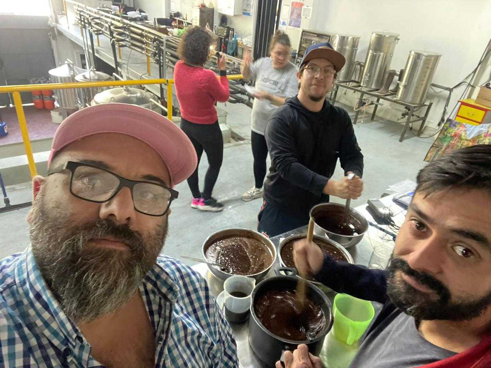
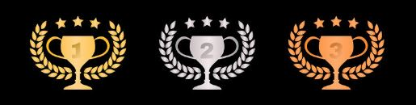
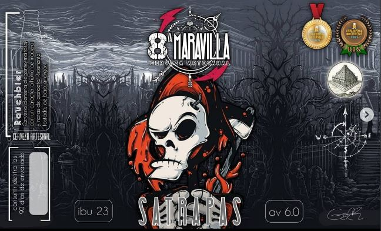
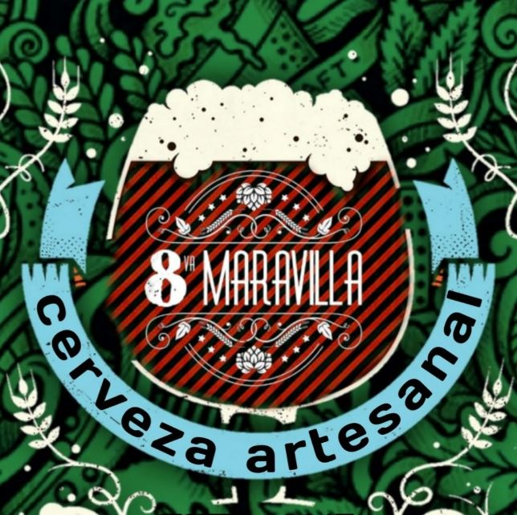

CERVEZA ARTESANAL PUNTANA ENTRE LAS MEJORES DEL PAIS

Obtuvo el premio de Oro en la Copa Cuyana de Cervezas 2021 a microcervecerías y tres medallas, que la posicionan entre las mejores cervezas de la región y el país. La primera edición fue en San Luis en 2019 organizada por Kerze que por la pandemia, se postergó la segunda edición por lo que ahora se hizo la segunda en Mendoza, en San Martín. Participaron más de 175 productores con 225 muestras aproximadamente caratuladas por diferentes estilos a modo de ejemplo como IPA, German Beer, británicas, etc. La evaluación estuvo a cargo de jueces de cervezas de nivel nacional e internacional que se dedican a catar aroma y sabor. Entre ellos se encontraban James Foster, Martin Boan, Mario Silva (Kerze).

Gonzalo Rastrilla, el joven empresario de la Cervecería “La Octava Maravilla” explicó, “presentamos 4 estilos; sacamos Oro con: German Beers Satrapas Rauchbier. Plata con Bitter and Strong British Beer – Babilonia Best Bitter, bronce con Best of Show Satrapas Rauchbier y Bronce para mejor Micro Cervecería de Cuyo”. El emprendedor destacó, “para nosotros es una oportunidad muy buena porque el que puedas medallar te da un prestigio como cervecería, por la calidad de jueces nacionales e internacionales, el puntaje es riguroso nos viene re bien, en cada muestra te hacen una devolución con lo que podemos trabajar para mejorar la cerveza, levantar la vara y mejorar la calidad del producto”.

Finalmente, el empresario puntano indicó que a fin de octubre se realizará la Copa Argentina de Cerveza en Buenos Aires,
“enviamos muestra para participar queremos aumentar la calidad y la producción sin perder nuestra esencia que nos llevó a
estar entre las mejores cervezas de cuyo y romper la frontera local”, finalizó Rastrilla.
Para más información los interesados pueden acceder al Instagram de La Octava Maravilla
-----> @laoctavamaravillacerveza <-----


|MEDALLERO|
Medalla de Oro German Beers
Satrapas Rauchbier.

Medalla de Plata con Bitter and Strong
British Beer - Babilonia Best Bitter.

Medalla de Bronce con Best of
Show Satrapas Rauchbier.

Medalla de Bronce para mejor
Micro Cervecería de Cuyo.
